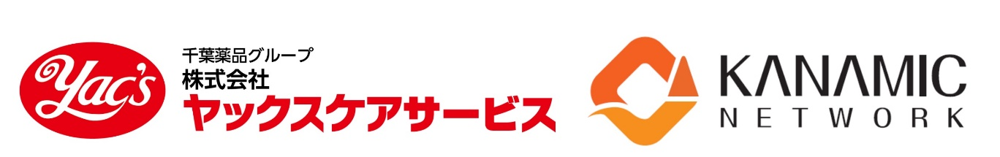
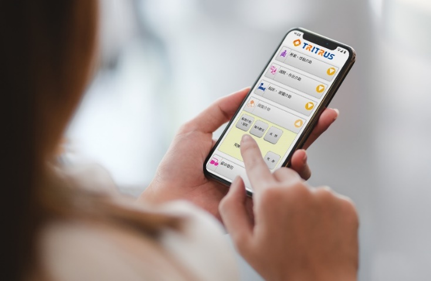

- 各位
- 2024年03月13日
会社名 株式会社カナミックネットワーク
代表者名 代表取締役社長 山本 拓真
(コード番号：3939 東証プライム市場)
超高齢社会のイノベーションに挑む企業を紹介
【ヤックスケアサービス×カナミックネットワーク】介護DX対談動画を公開
ITを通じて超高齢社会の課題解決に取り組む、株式会社カナミックネットワーク（本社：東京都渋谷区、代表取締役社長：山本拓真、以下「当社」）は、当社が提供するカナミッククラウドサービスを導入する、株式会社ヤックスケアサービス（本社：千葉県千葉市、代表取締役社長：末祐一郎、以下「ヤックスケアサービス」）と、介護事業のイノベーションやDX化について対談した“介護DX対談”動画を2024年3月13日より当社のYouTubeチャンネルにて公開します。カナミックネットワークでは、高齢先進国日本から世界の高齢化を救うイノベーションを生み出すために、今後も様々な動画コンテンツを企画・発信していく予定です。
【対談URL】https://youtu.be/Hy38D2UviMI
※後編は近日公開予定

■介護DXとは？
介護DXとは、介護現場にAIやIoT、ICTなどのデジタル技術を取り入れ、介護業務のワークフローを変革する取り組みです。デジタル化によって、業務効率化を図り、働きやすい環境作りや、介護職員が介護サービスの提供により集中し、より質の高い介護サービスの提供につながるなど、介護業界の様々な課題解決につながる取り組みとして、期待されています。
■対談の内容
千葉薬品グループで介護事業を展開するヤックスケアサービスは、千葉県を中心に、通所介護事業（デイサービス）、訪問介護事業、居宅介護支援事業、サービス付き高齢者向け住宅、福祉用具貸与などを展開し、介護事業所数において、千葉県内でもトップクラスの企業となります。特に、ドラッグストアにデイサービスを併設した“ドラッグストア併設型デイサービス”が人気で、機能訓練としての買い物プログラムの実施や、調剤薬局や管理栄養士と連携した「ヤックスケアステーションモデル」を展開し、ドラッグストアを起点とした地域密着の健康ステーションとしての役割を果たしています。
今回番組では、当社の代表取締役社長 山本拓真がナビゲーターを務め、ヤックスケアサービス代表取締役社長 末祐一郎氏と対談し、ヤックスケアサービスが描く介護事業のイノベーションから、カナミッククラウドサービスを使用した介護DXの取り組みについて紹介し、超高齢社会の課題解決のヒントを探っていきます。
【対談の風景】
ヤックスケアサービスからのコメント
これからもカナミッククラウドサービスを活用させていただき、すべての職員が安心して働き続けられるように業務改善を推進します。これによってご利用者に関わる時間を増やし、結果、サービスの質が上がり、ご利用者に喜んでいただけるはずです。
現在、ICT機器等を導入し生産性を向上させていく動きはありますが、施設系サービスへの導入が主流で、ご利用者宅でサービスを行う在宅系サービスでは、職員のマンパワーに頼っているのが現状です。人に頼るのではなく、カナミックネットワーク様とデジタル化を推進し、ご利用者がいつまでも住み慣れた地域、自宅で生活を送れるようサービスを提供し続けていきたいと考えております。
株式会社ヤックスケアサービス
代表取締役社長 末 祐一郎
カナミックネットワークからのコメント
少子高齢化の日本において、2040年の高齢化率・高齢者数のピークが来るまでの間に医療・介護業界は大きく発展していく分野です。ただ、日本全体の生産人口の減少により、医療・介護従事者一人当たりの生産性を上げていく事が喫緊の課題であり、それにはICT、IoTセンサー、AIの活用が最も重要な要素です。
ドラえもんのような夢のような未来ツールでなくても、医療・介護業界現場の目の前の煩雑な業務を一つ一つ改善していく事が、全体の生産性向上に繋がっていきます。ヤックスケアサービス様は、まさにその現場の生産性向上に本気で取り組み、今後20年間の日本の超高齢社会を支えられる会社として発展していかれる「薬局と介護の複合体」の企業様であると感じております。民間の知恵を絞って、医療・介護業界の今後の発展をこれからもご一緒していければ幸いです。
株式会社カナミックネットワーク
代表取締役社長 山本 拓真
「カナミッククラウドサービス」について
超高齢社会に求められる「地域包括ケアシステム」の実現に寄与するために、地方自治体や医師会及び介護サービス事業者向けの多職種間連携を可能にする地域連携型クラウドサービス。多職種他法人間の連携を目的とした情報共有システムと、介護事業者向けの業務システムをご提供しております。
【カナミッククラウドサービス：活用イメージ図】

以 上
本件に関するお問い合わせ先
株式会社カナミックネットワーク 管理部
所在地 〒150-6031 東京都渋谷区恵比寿4-20-3 恵比寿ガーデンプレイスタワー31階
ＴＥＬ 03-5798-3955
ＦＡＸ 03-5798-3951
問合せフォーム https://www.kanamic.net/form/request/input.jsp